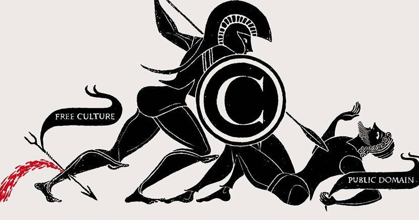

Resumen y descarga de el Proyecto de Grado denominado "Sistema movil del estado del trafico vial en el Macrodistrito centro de la ciudad de La Paz, Basado en Mapeo colaborativo."

RESUMEN
Las aplicaciones móviles se constituyen hoy en día en una importante herramienta de ayuda a las personas en sus tareas diarias, no solo como fuente de diversión, sino como fuente de conocimientos e información actualizada.El presente proyecto denominado “SISTEMA MÓVIL DEL ESTADO DEL TRAFICO VIAL EN EL MACRO DISTRITO CENTRO DE LA CIUDAD DE LA PAZ, BASADO EN MAPEO COLABORATIVO” aprovecha los dispositivos móviles para identificar los puntos conflictivos en el trafico vial, generados por bloqueos, trancaderas, accidentes, movilizaciones sociales u otro tipo de manifestaciones que afectan el flujo normal del tráfico en el Centro de la ciudad de La Paz. La metodología utilizada en este proyecto es MOBILE-D, una metodología ágil para desarrollar aplicaciones móviles, que consta de 5 fases y cada fase de tres etapas: planeación, programación y liberación. Para la evaluación de las métricas de calidad estándar se utilizó la norma ISO 9126.Para la evaluación de costos se utilizó el modelo constructivo COCOMO II y para estimación de los beneficios y la evaluación económica del proyecto los métodos VAN y TIR, además del costo/beneficio. Mediante el análisis de los resultados se determina que el sistema desarrollado cumple con los objetivos planteados.